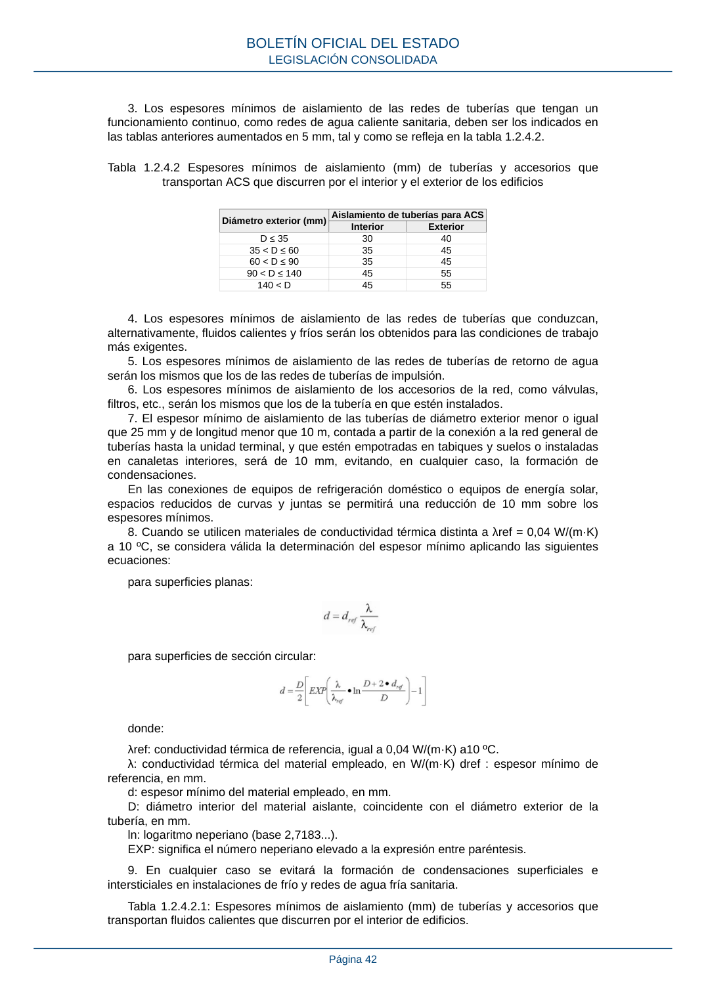

RITE · Página 42 · versión 2022-08-02
SHA256: ad1680c83bf4c7f5c656af1794c32ad0669ad9f36ac293737ff3f95177ff7b26 · página física 42 de 97 · métodos de encabezado
solo si están cotejados.
Formatos: Markdown · JSON de bloques · PDF p. 42 · imagen PNG
3. Los espesores mínimos de aislamiento de las redes de tuberías que tengan un funcionamiento continuo, como redes de agua caliente sanitaria, deben ser los indicados en las tablas anteriores aumentados en 5 mm, tal y como se refleja en la tabla 1.2.4.2. Tabla 1.2.4.2 Espesores mínimos de aislamiento (mm) de tuberías y accesorios que transportan ACS que discurren por el interior y el exterior de los edificios Diámetro exterior (mm) Aislamiento de tuberías para ACS Interior Exterior D ≤ 35 30 40 35 < D ≤ 60 35 45 60 < D ≤ 90 35 45 90 < D ≤ 140 45 55 140 < D 45 55 4. Los espesores mínimos de aislamiento de las redes de tuberías que conduzcan, alternativamente, fluidos calientes y fríos serán los obtenidos para las condiciones de trabajo más exigentes. 5. Los espesores mínimos de aislamiento de las redes de tuberías de retorno de agua serán los mismos que los de las redes de tuberías de impulsión. 6. Los espesores mínimos de aislamiento de los accesorios de la red, como válvulas, filtros, etc., serán los mismos que los de la tubería en que estén instalados. 7. El espesor mínimo de aislamiento de las tuberías de diámetro exterior menor o igual que 25 mm y de longitud menor que 10 m, contada a partir de la conexión a la red general de tuberías hasta la unidad terminal, y que estén empotradas en tabiques y suelos o instaladas en canaletas interiores, será de 10 mm, evitando, en cualquier caso, la formación de condensaciones. En las conexiones de equipos de refrigeración doméstico o equipos de energía solar, espacios reducidos de curvas y juntas se permitirá una reducción de 10 mm sobre los espesores mínimos. 8. Cuando se utilicen materiales de conductividad térmica distinta a λref = 0,04 W/(m·K) a 10 ºC, se considera válida la determinación del espesor mínimo aplicando las siguientes ecuaciones: para superficies planas: para superficies de sección circular: donde: λref: conductividad térmica de referencia, igual a 0,04 W/(m·K) a10 ºC. λ: conductividad térmica del material empleado, en W/(m·K) dref : espesor mínimo de referencia, en mm. d: espesor mínimo del material empleado, en mm. D: diámetro interior del material aislante, coincidente con el diámetro exterior de la tubería, en mm. ln: logaritmo neperiano (base 2,7183...). EXP: significa el número neperiano elevado a la expresión entre paréntesis. 9. En cualquier caso se evitará la formación de condensaciones superficiales e intersticiales en instalaciones de frío y redes de agua fría sanitaria. Tabla 1.2.4.2.1: Espesores mínimos de aislamiento (mm) de tuberías y accesorios que transportan fluidos calientes que discurren por el interior de edificios. BOLETÍN OFICIAL DEL ESTADO LEGISLACIÓN CONSOLIDADA Página 42
